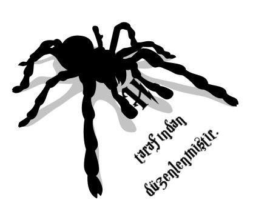

Teşekkür
Bloomsbury ve Comic Relief bu kitap için vakit ve çaba harcayan ve bu kitaba katkıda bulunan herkese çok çok teşekkür eder.
Elbette, bu kitabı yarattığı ve bütün gelirlerini cömertçe Comic Relief'e verdiği için, J.K. Rowling'e de.
Comic Relief (İngiltere), 1985'te toplumsal adaleti destekleyen ve yoksullara çözüm bulmaya yardımcı olan projeler için kaynak yaratmak amacıyla İngiliz komedyenlerce kuruldu. Comic Relief'in halktan aldığı her bir kuruş, Save the Children ve Oxfam gibi dünyaca tanınmış kuruluşlar aracılığıyla, ona en çok ihtiyaç duyulan yere gidiyor. Bu kitabın dünyanın her yanındaki satışından elde edilen para, dünyanın en yoksul ülkelerindeki en yoksul topluluklara yardım amacıyla kullanılacak; ayrıca İngiltere'deki satışlardan gelen paranın bir kısmı, İngilitere'deki projelere de gidecek. Comic Relief sicilli bir hayır kuruluşudur, numarasıysa 326568'dir.

Fotoğraflayan: BRC
OCR: spiderh
E-kitap Düzenleme: spiderh